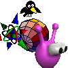
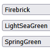
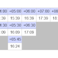
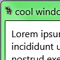
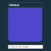
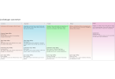
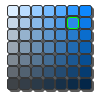
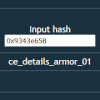
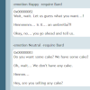

zel's page
she/heri like playing around with html and css and javascript, i made this because i wanted a convenient place to host my js toys and tools
tumblr main blog
tumblr art blog
random spore facts
random javascript toys

draggable tiny images
upload & drag gifs around!

color selector test
with default html colors

timezone viewer
the time in all timezones

windows 7 aero test
its even recolorable!
spore javascript tools and such

color value & skinpaint converter
(converts float rgb colors, also)

archetype converter
for the resulting space archetype

color matches
finds closest color to selection

creation hash converter
for hashes in creation xml files

space diplomacy [WIP]
space and civ comms dialogue
all cheats from the feb 19 2008 spore build
MORE TO COME LATER